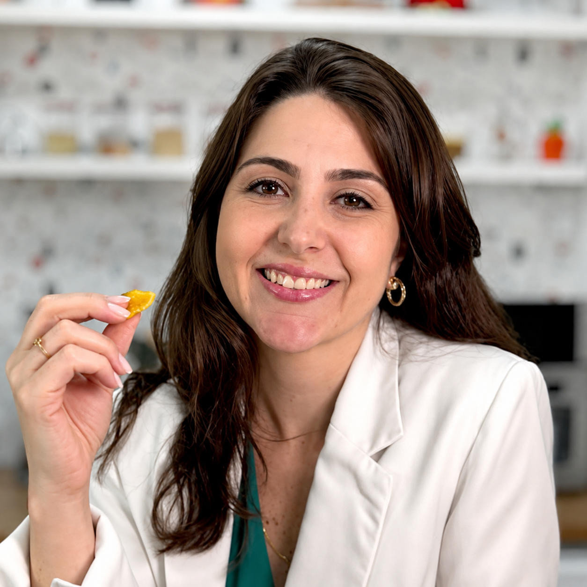
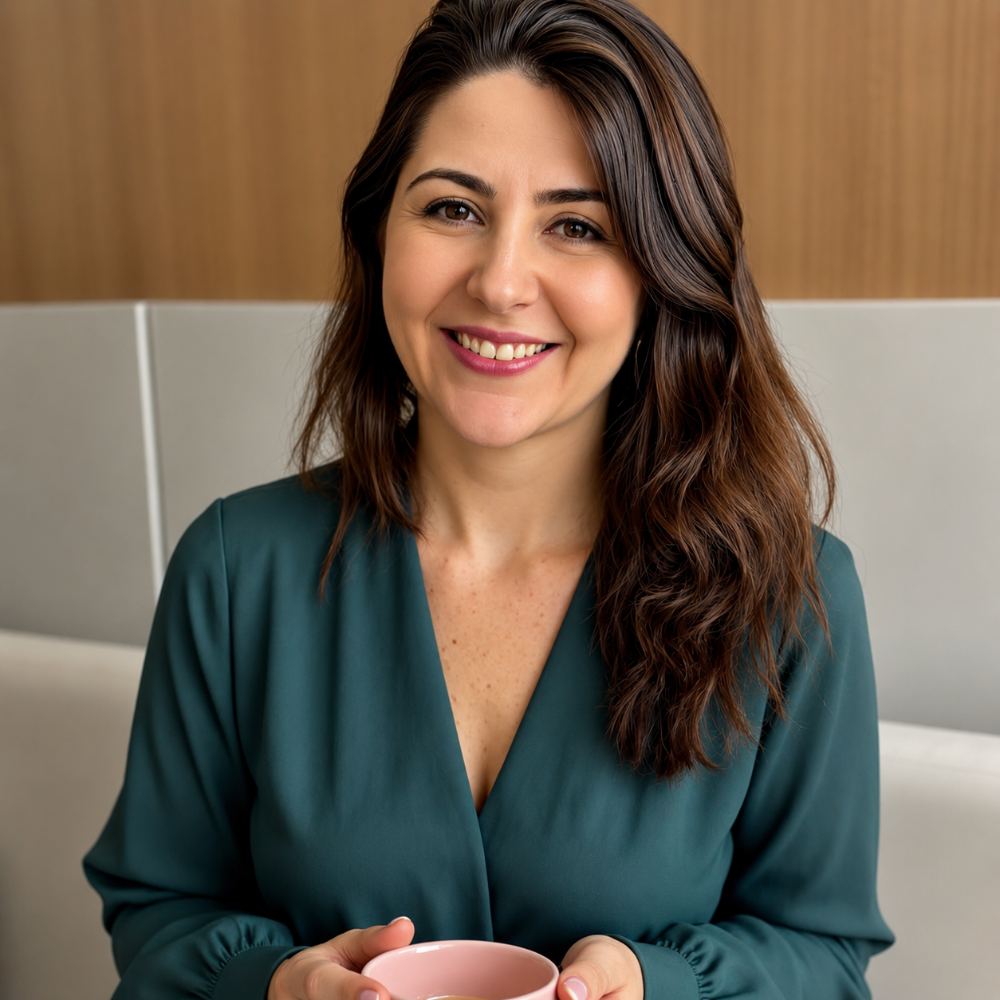

Sessão
Consulta
pontual
Para quem quer uma avaliação completa, um plano personalizado e orientação para começar.
- Consulta individualizada
- Análise de exames
- Plano alimentar
- Suplementação quando indicada
- Suporte conforme modalidade
Nutrição especializada para cuidar de você e do seu bebê com ciência, acolhimento e um plano que faça sentido para a sua vida real.

Você não precisa seguir uma lista impossível de regras. O acompanhamento é construído a partir da sua rotina, dos seus exames, dos seus sintomas e da fase em que você está.
O objetivo é traduzir nutrição em decisões simples: o que comer, como organizar, o que priorizar e como cuidar de você sem culpa e sem terrorismo alimentar.
Ver como funciona →
Uma abordagem personalizada para diferentes momentos e necessidades da saúde da mulher, com foco especial na gestação e no cuidado materno-infantil.
Acompanhamento nutricional para atravessar cada fase da gestação com mais segurança e tranquilidade.
Um olhar individualizado para rotina, alimentação, sintomas, exames e qualidade de vida.
Plano alimentar adaptado às preferências, necessidades e realidade de cada paciente.
Atendimento de qualquer lugar, mantendo a proposta de cuidado individualizado e próximo.
O acompanhamento une conhecimento técnico, escuta e uma comunicação simples para que você saiba exatamente o que fazer depois da consulta.
Ciência · cuidado · acolhimentoA consulta original é apresentada como um momento de escuta, avaliação e construção conjunta. Aqui, essa jornada ganha uma narrativa mais visual.
Quero começar →Conversamos sobre rotina, alimentação, sintomas, histórico e necessidades. Exames também entram na avaliação quando disponíveis.
Você recebe um planejamento alimentar personalizado, com opções e substituições para facilitar a aplicação no cotidiano.
Quando indicada para o seu caso, a suplementação é orientada a partir da avaliação e das necessidades identificadas.
Após a consulta, existe suporte para dúvidas e ajustes conforme a modalidade de acompanhamento escolhida.
Uma apresentação clara para quem prefere uma consulta pontual ou quer construir um acompanhamento ao longo do tempo.
Para quem quer uma avaliação completa, um plano personalizado e orientação para começar.
Uma jornada contínua para acompanhar evolução, adaptar estratégias e manter o cuidado presente.
Para quem deseja um acompanhamento mais longo e uma visão de cuidado que acompanha diferentes fases.
O que aparece com força nas avaliações é o cuidado próximo, o carinho e a capacidade de adaptar a alimentação à rotina.
“A Bruna é maravilhosa, recomendo de olhos fechados. Só tenho que agradecer pela atenção e todo carinho que ela teve na minha gestação.”
“Enfim encontrei a Nutri vida real, conhecendo-a na minha 4ª gestação e com uma nova abordagem na qualidade e evolução saudável nesta gestação.”
“Nas consultas sempre procura elaborar a dieta o mais compatível com a nossa rotina possível e ouve sempre o que gostamos e o que não deu certo naquele mês.”
“Amei.”

Cresci em uma família italiana, onde comida era mais do que nutrição, era cuidado, presença e afeto. Desde os 17 anos, soube que meu caminho era a nutrição.
Há 15 anos me dedico a ajudar mulheres e gestantes a viverem uma alimentação com mais consciência, saúde e tranquilidade, mesmo nos momentos mais desafiadores.
Sou especialista em nutrição materno-infantil e busquei formações que ampliam meu olhar, unindo ciência, empatia e explicações simples para o dia a dia real.
Também é possível realizar o acompanhamento online. Fale pelo WhatsApp para consultar disponibilidade e escolher o formato ideal.
Agende uma conversa com Bruna Cavallaro e descubra qual formato de acompanhamento faz sentido para o seu momento.
Agendar pelo WhatsApp ↗